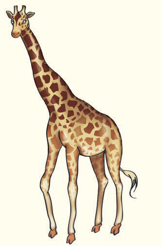

The calf is standing behind its mother. The calf has a very short tail and brown spots. Tanzania has many giraffes in its national parks.

Questions
(i)
Does the giraffe have a long neck?
Yes, the giraffe ___ a long neck.
(ii)
Does the giraffe have a short neck?
No, the giraffe doesn’t ___ a short neck.
(iii)
Does the giraffe have short legs?
No, the giraffe doesn’t ___ short legs.
(iv)
Does the giraffe have green spots?
No, the giraffe doesn’t ___ green spots.
(v)
Does the giraffe have a calf?
Yes, the giraffe ___ a calf.